Malik Peace
Malik Peace, my name is Malik Peace.
I make videos and tools to help people think differently, deeper and can get most out of their one existence.

My mission is simple: be useful.
To help as many people as possible get the most out of their one life. To me that means thinking deeply about the big questions, like why we’re here and what actually matters. Then it means doing something about it.
How it’s going so far...
Names and profile pictures are blurred for privacy.
If you are reading this, I assume you want to get more out of your life(good!). And when you research a million different people on how to do this, you’ll get a million different answers.
But the common denominator between ALL of them is that they took:
Consistentfocusedaction.
Please if you can, staple this to the front of your forehead or have it posted up on a wall somewhere. Because that right there, is basically the secret to success. Literally, almost 90% of all motivational self improvement whatever, can be summed up with just those 3 words.
Seriously, look at anyone great in any area, and 99/100 you’ll find relentless, unwavering, almost obsessive focus for a part of their life.
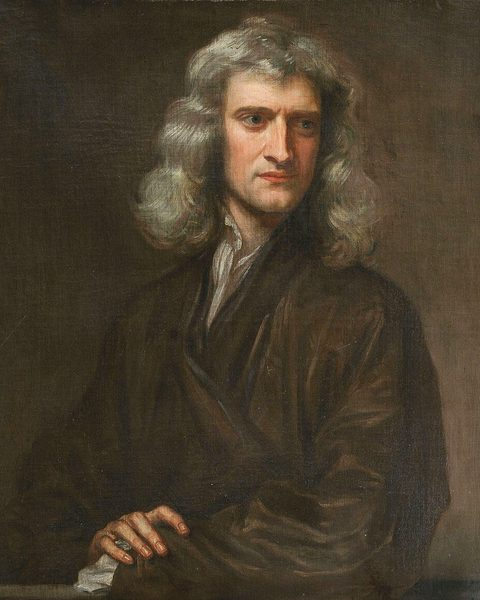
Focused actionWorking alone on math and physicsConsistencyAbout 18 months, while Cambridge was closed for the plagueResultThe beginnings of calculus, in his early 20sIsaac NewtonLaws of motion, gravity and calculusSee how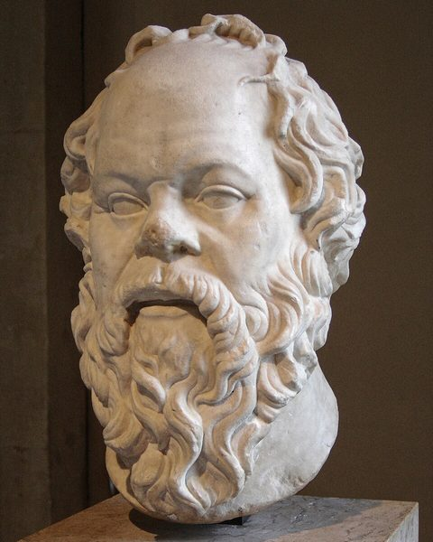
Focused actionQuestioning people about how to liveConsistencyHis whole adult lifeResultShaped philosophy for 2,400 years without writing a wordSocratesFounding Western philosophySee how- Focused actionPracticing on public courts in Compton with her dadConsistencyFrom early childhoodResult23 Grand Slam singles titles, the most by a woman in the Open EraSerena Williams23 Grand Slam singles titlesSee how
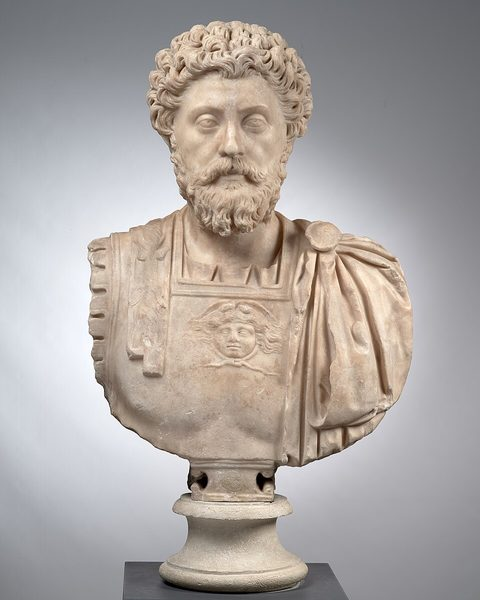
Focused actionWriting private notes to himself on how to liveConsistencyYears of military campaignsResultMeditations, still read almost 2,000 years laterMarcus AureliusRoman emperor who wrote MeditationsSee how- Focused actionUploading and studying YouTube videosConsistencyAbout 5 years before his first hitResult“I Counted to 100,000!” took off in 2017MrBeastThe most subscribed channel on YouTubeSee how
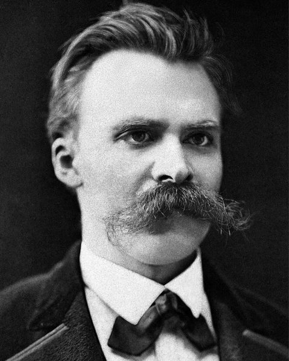
Focused actionWritingConsistencyThe 1880s, through constant illnessResultAlmost a book a yearFriedrich NietzscheThus Spoke ZarathustraSee how- Focused actionGoing back south to guide people northConsistencyAbout 13 trips over roughly a decadeResultAround 70 people freedHarriet TubmanLeading people out of slaverySee how
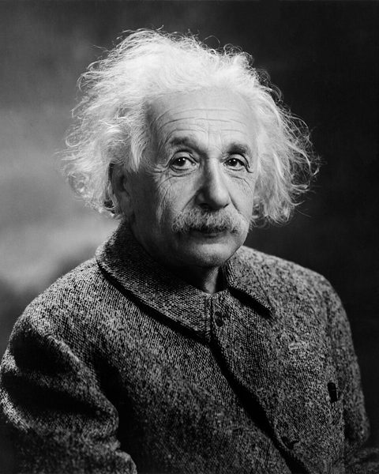
Focused actionWorking on physics outside his day jobConsistencyYears, while working full time at a patent officeResultFour breakthrough papers in 1905, including special relativityAlbert EinsteinThe theory of relativitySee how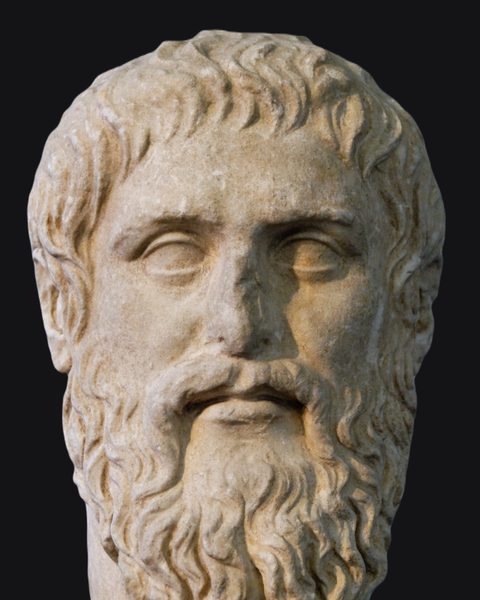
Focused actionWriting dialogues and teaching at his AcademyConsistencyAbout 40 yearsResultAbout 35 dialogues, and an Academy that ran for about 300 yearsPlatoPhilosopher, student of SocratesSee how- Focused actionTraining before sunriseConsistencyA 20-season NBA careerResultFive NBA titles and 18 All-Star selectionsKobe BryantFive NBA championshipsSee how
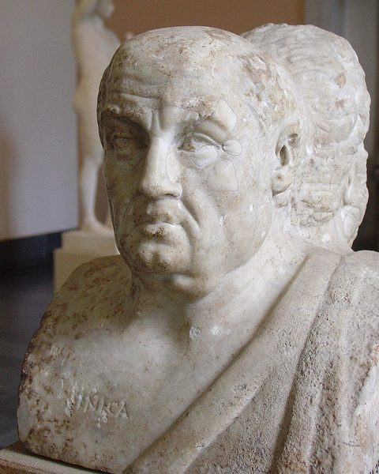
Focused actionWriting letters on how to live wellConsistencyThe last years of his lifeResult124 letters still read todaySenecaStoic philosopherSee how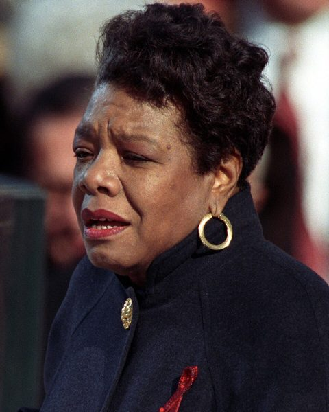
Focused actionWriting in a rented hotel room every morningConsistencyDecadesResultSeven autobiographies and many books of poetryMaya AngelouI Know Why the Caged Bird SingsSee how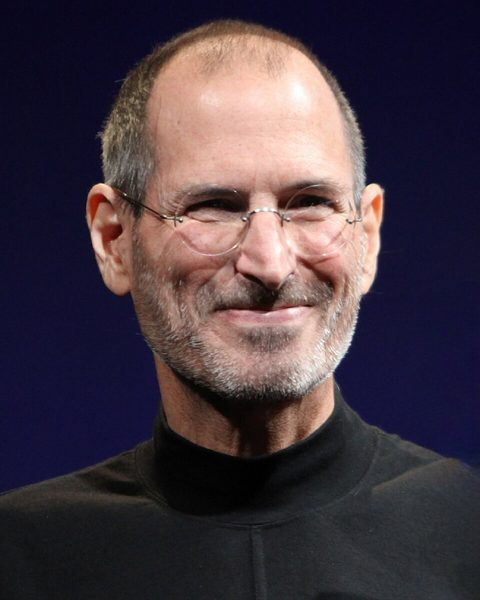
Focused actionBuilding products he believed inConsistencyOver 30 years, even after being forced out in 1985ResultThe Mac, the iPod and the iPhoneSteve JobsCo-founding AppleSee how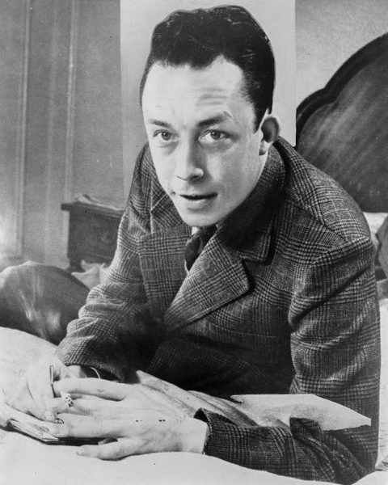
Focused actionWritingConsistencyThrough tuberculosis and a world warResultThe Nobel Prize in Literature at 44Albert CamusThe Stranger and The Myth of SisyphusSee how- Focused actionGymnastics trainingConsistencyMore than 20 years, since age 6Result30 World Championship medals and 11 Olympic medalsSimone BilesThe most decorated gymnast everSee how
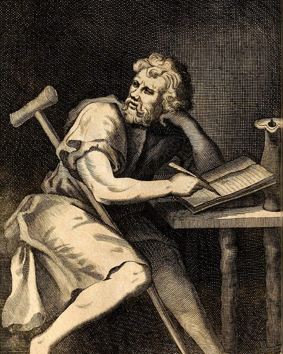
Focused actionTeaching Stoic philosophyConsistencyDecades at his own school in NicopolisResultThe Discourses and the Enchiridion, written down by his student ArrianEpictetusStoic philosopher, born into slaverySee how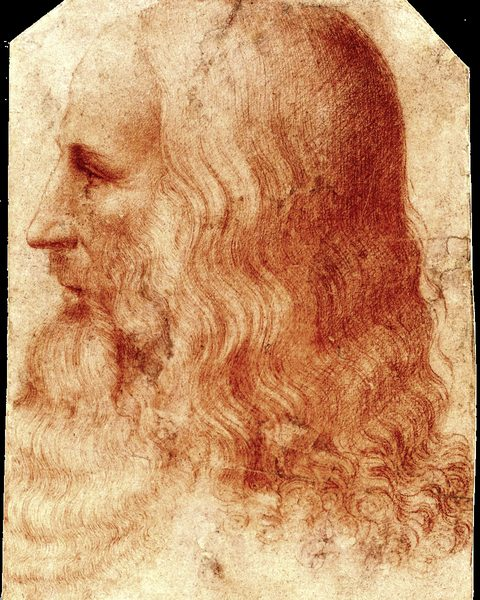
Focused actionPainting and refining one portraitConsistencyFrom about 1503, possibly until 1517ResultThe Mona LisaLeonardo da VinciThe Mona LisaSee how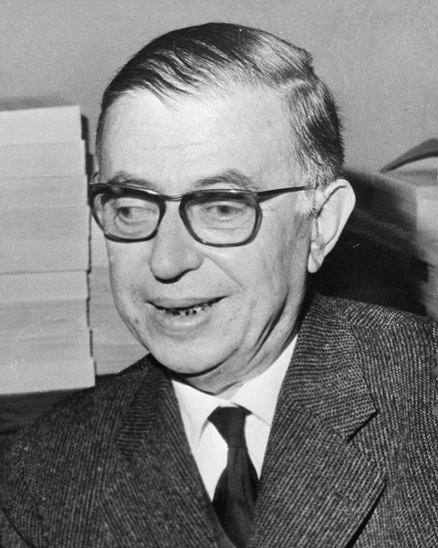
Focused actionWritingConsistencyMornings and evenings, almost every day, for decadesResultBeing and Nothingness, and the 1964 Nobel Prize he turned downJean-Paul SartrePhilosopher and novelistSee how- Focused actionPlaying and training at the top levelConsistencyMore than 20 NBA seasonsResultThe all-time scoring record in 2023 and four championshipsLeBron JamesThe NBA’s all-time leading scorerSee how
- Focused actionRebuilding his lost manuscript on scraps of paperConsistencyYears in Nazi concentration campsResultA book written in nine days, read by millionsViktor FranklMan’s Search for MeaningSee how
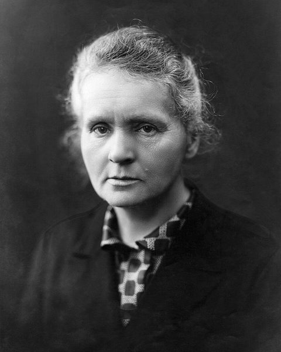
Focused actionProcessing tons of ore by handConsistencyAbout four yearsResultNobel Prizes in both physics and chemistryMarie CurieDiscovering polonium and radiumSee how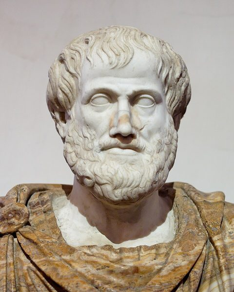
Focused actionStudying and researching at Plato’s AcademyConsistencyAbout 20 years, from age 17ResultFounded the Lyceum and wrote on almost every subject, from logic to biologyAristotlePhilosopher and scientistSee how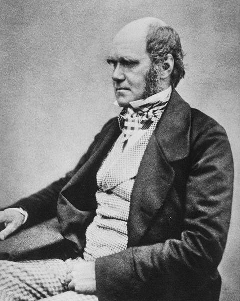
Focused actionGathering evidenceConsistencyMore than 20 yearsResultOn the Origin of Species, 1859Charles DarwinThe theory of evolutionSee how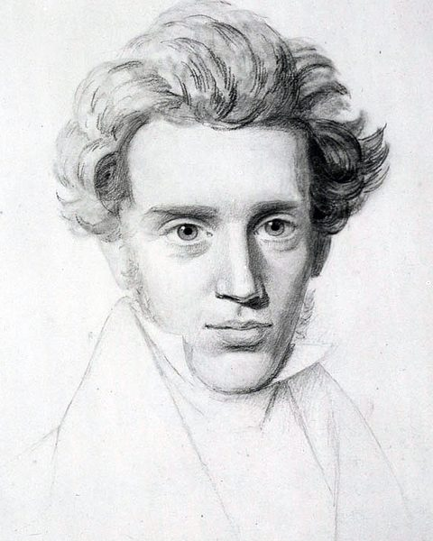
Focused actionWritingConsistencyAbout 12 years; in 1843 alone he published three major booksResultEither/Or, Fear and Trembling and The Sickness unto DeathSøren KierkegaardPhilosopher, father of existentialismSee how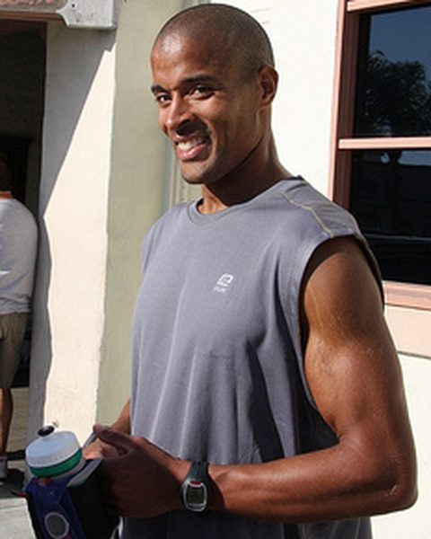
Focused actionTraining for hours every dayConsistencyUnder three monthsResultLost 100+ pounds and qualified for Navy SEAL trainingDavid GogginsNavy SEAL and ultrarunnerSee how- Focused actionWriting the first Harry Potter bookConsistencyAbout five years, then 12 rejectionsResultMore than 500 million Harry Potter books soldJ.K. RowlingHarry PotterSee how
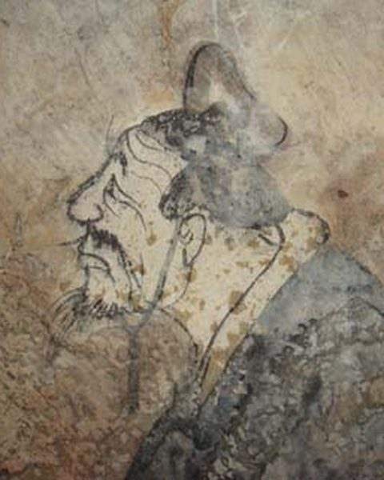
Focused actionTeaching his students how to live and leadConsistencyDecades, much of it traveling between statesResultThe Analects, which shaped Chinese culture for 2,500 yearsConfuciusPhilosopher and teacherSee how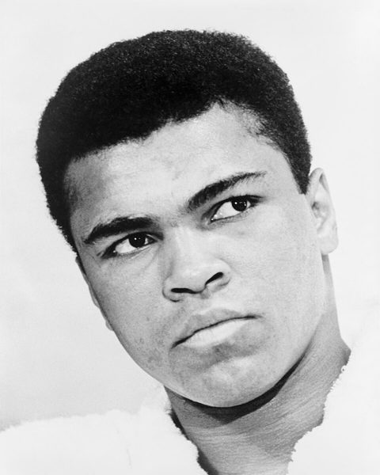
Focused actionComing back after being bannedConsistencyOver three years out of boxing in his primeResultWon the heavyweight title back twiceMuhammad AliThree-time heavyweight championSee how- Focused actionWritingConsistencyAlmost every day for decadesResultThe Second Sex, one of the most influential books of the 20th centurySimone de BeauvoirPhilosopher and writerSee how
- Focused actionSpeaking up for girls’ educationConsistencySince age 11, even after being shot at 15ResultThe youngest Nobel Peace Prize winner, at 17Malala YousafzaiFighting for girls’ educationSee how
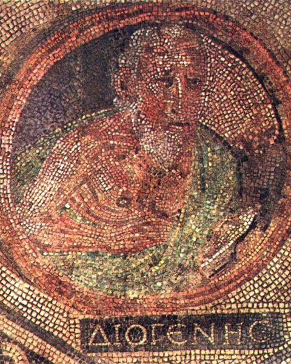
Focused actionLiving his philosophy with almost nothingConsistencyHis whole adult life, sleeping in a large clay jarResultCynicism, which helped shape StoicismDiogenesCynic philosopherSee how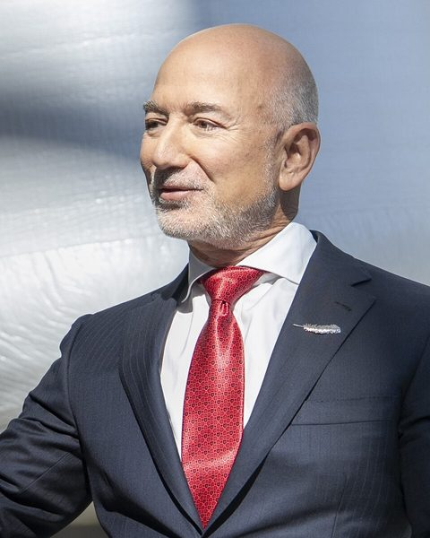
Focused actionBuilding AmazonConsistencyNine years before its first full-year profitResultOne of the largest companies in the worldJeff BezosFounding AmazonSee how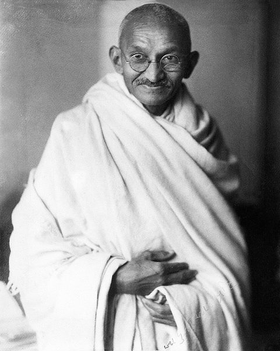
Focused actionNonviolent protest, like the 240-mile Salt MarchConsistencyDecadesResultIndia’s independence in 1947Mahatma GandhiLeading India’s independence movementSee how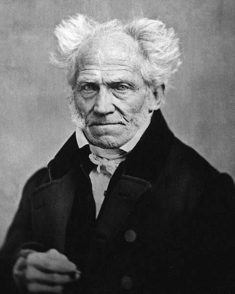
Focused actionDeveloping one philosophyConsistencyOver 30 years of being mostly ignoredResultThe World as Will and Representation, which went on to influence Nietzsche and WagnerArthur SchopenhauerPhilosopherSee how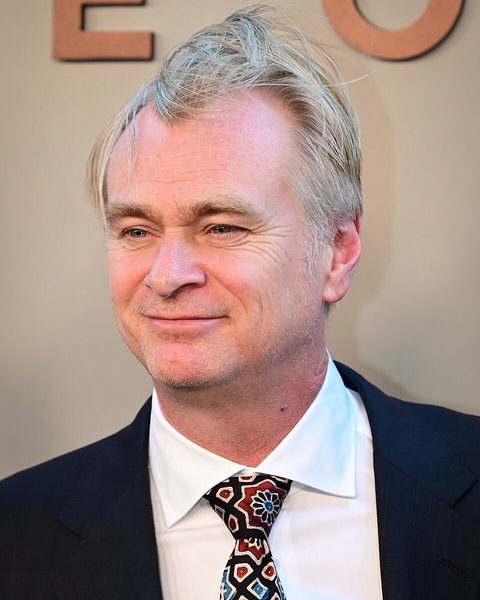
Focused actionShooting his first film on weekendsConsistencyAbout a year, on around £3,000ResultA career that led to an Oscar for Best DirectorChristopher NolanOppenheimer and The Dark KnightSee how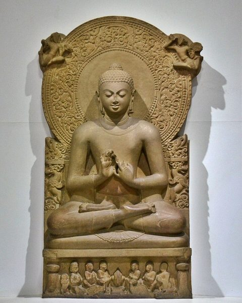
Focused actionMeditating and searching for the end of sufferingConsistencySix years before his awakening, then about 45 years of teachingResultBuddhism, practiced by hundreds of millions todayThe BuddhaFounder of BuddhismSee how- Focused actionTraining and playing at the top levelConsistencyOver 20 yearsResult900+ goals, and goals at five World CupsCristiano RonaldoThe most goals in men’s football historySee how
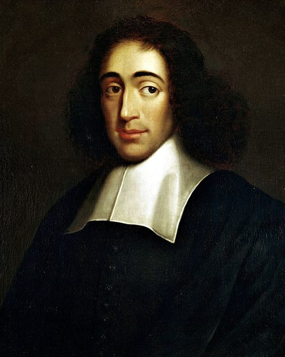
Focused actionWriting the Ethics, while grinding lenses for a livingConsistencyAbout 14 years, from 1661 to 1675ResultThe Ethics, published after his deathBaruch SpinozaPhilosopherSee how- Focused actionSpeaking and organizingConsistencyAbout 11 years: six million miles and 2,500+ speechesResultHelped win the Civil Rights Act and the Voting Rights ActMartin Luther King Jr.Leading the civil rights movementSee how
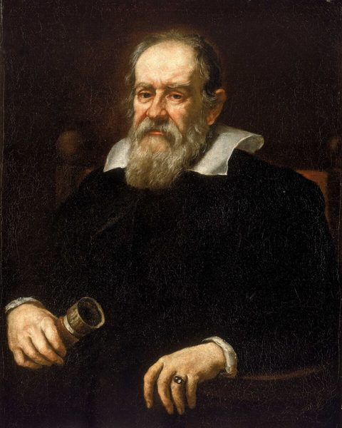
Focused actionWatching the sky through telescopes he builtConsistencyNight after nightResultDiscovered Jupiter’s four largest moons in 1610Galileo GalileiFather of modern astronomySee how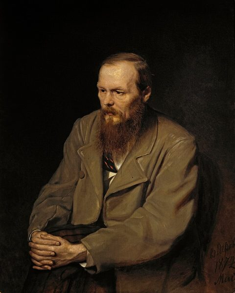
Focused actionWriting, often against debt and deadlinesConsistencyDecades, after four years in a Siberian prison campResultCrime and Punishment and The Brothers KaramazovFyodor DostoevskyNovelist and thinkerSee how- Focused actionFixing Model 3 productionConsistencyMonths in 2018, sleeping at the factoryResult5,000 Model 3s a week by mid-2018Elon MuskSpaceX and TeslaSee how
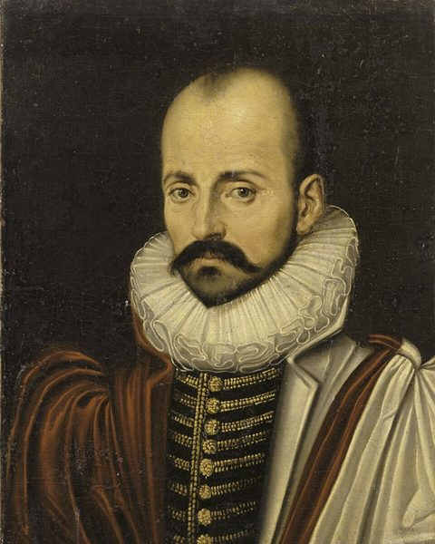
Focused actionWriting and rewriting his Essays in his tower libraryConsistencyAbout 20 years, from age 38 until his deathResultThe Essays, which created a new kind of writingMichel de MontaignePhilosopher who invented the essaySee how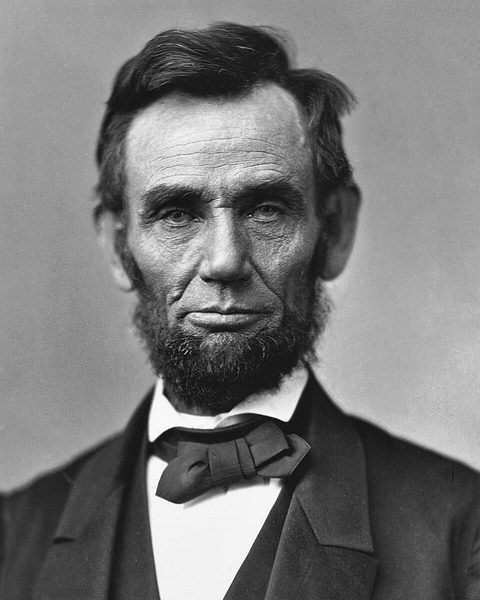
Focused actionRunning for officeConsistencyThrough two lost Senate racesResultElected president in 1860Abraham Lincoln16th president of the United StatesSee how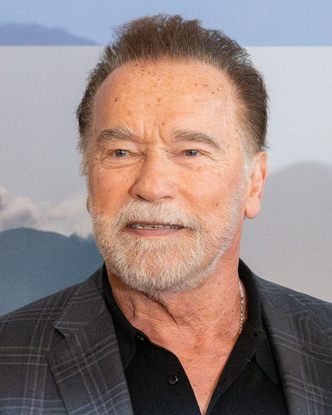
Focused actionTrainingConsistencyHours a day for yearsResultSeven Mr. Olympia titlesArnold SchwarzeneggerBodybuilding, movies and politicsSee how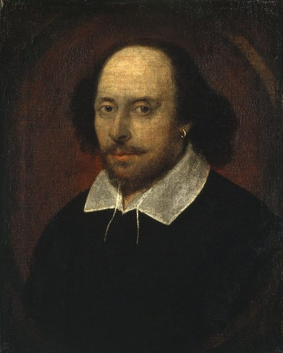
Focused actionWriting playsConsistencyOne or two a year for over 20 yearsResultAbout 37 plays and 154 sonnetsWilliam ShakespeareThe most famous writer in EnglishSee how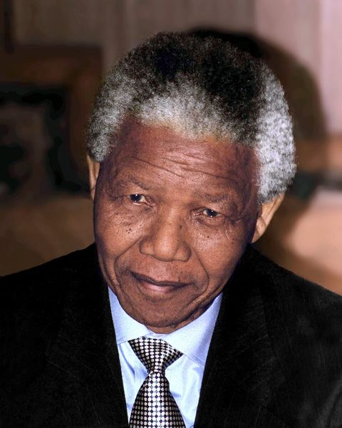
Focused actionHolding to the fight against apartheidConsistency27 years in prisonResultElected president in 1994Nelson MandelaSouth Africa’s first Black presidentSee how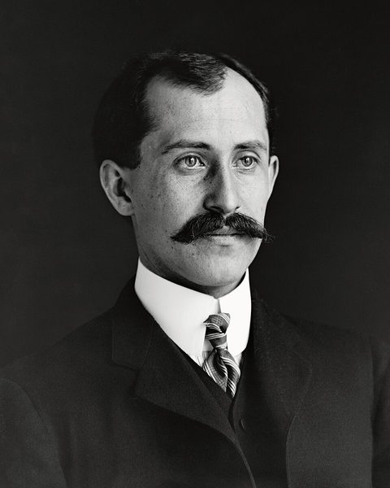
Focused actionTesting kites, gliders and engines with his brother WilburConsistencyFour yearsResultThe first powered flight, in 1903Orville WrightThe first powered airplane flightSee how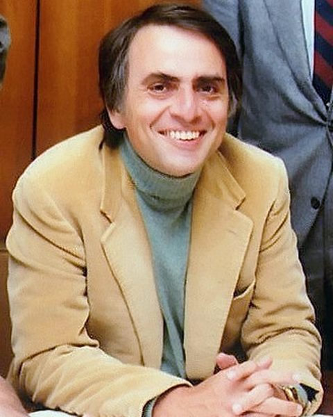
Focused actionExplaining the universe to the publicConsistencyDecadesResultCosmos, seen by more than 500 million peopleCarl SaganCosmosSee how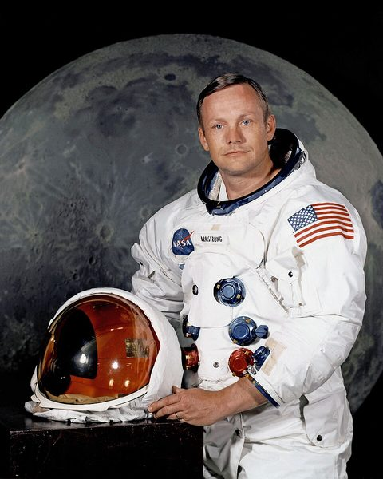
Focused actionFlying test aircraft and spacecraftConsistencyAbout 14 yearsResultThe first steps on the Moon, in 1969Neil ArmstrongFirst person on the MoonSee how- Focused actionMaking videosConsistencyYears, starting at 30 viewsResult65.9k people watchMalik PeaceMaking videos and building MementoSee how
Photo credits
Via Wikimedia Commons. Isaac Newton: Godfrey Kneller, Public domain; Socrates: Copy of Lysippos (?), Public domain; Serena Williams: AndrewHenkelman, CC BY-SA 4.0; Marcus Aurelius: Daniel Martin, CC BY-SA 4.0; MrBeast: Tyren Redd, CC BY 4.0; Friedrich Nietzsche: Friedrich Hermann Hartmann, Public domain; Harriet Tubman: Powelson, Benjamin F. 1823 - 1885, Public domain; Albert Einstein: Oren Jack Turner, Public domain; Plato: Marie-Lan Nguyen, Public domain; Kobe Bryant: Keith Allison, CC BY-SA 2.0; Seneca: Calidius, CC BY-SA 3.0; Maya Angelou: Clinton Library, Public domain; Steve Jobs: Matthew Yohe, CC BY-SA 3.0; Albert Camus: Photograph by United Press International, Public domain; Simone Biles: Ocoudis, CC BY-SA 4.0; Epictetus: William Sonmans / Michael Burghers, Public domain; Leonardo da Vinci: Attributed to Francesco Melzi, Public domain; Jean-Paul Sartre: Unknown authorUnknown author, CC BY-SA 3.0 nl; LeBron James: Erik Drost, CC BY 2.0; Viktor Frankl: Prof. Dr. Franz Vesely, CC BY-SA 3.0 de; Marie Curie: Henri Manuel, Public domain; Aristotle: After Lysippos, Public domain; Charles Darwin: Beao, Public domain; Søren Kierkegaard: La Biblioteca Real de Dinamarca, Public domain; David Goggins: //www.flickr.com/photos/thecanonrattman/, CC BY-SA 3.0; J.K. Rowling: Daniel Ogren, CC BY 2.0; Confucius: Anonymous Chinese painter of the Western Han period, Public domain; Muhammad Ali: Ira Rosenberg, Public domain; Simone de Beauvoir: Moshe Milner, CC BY-SA 3.0; Malala Yousafzai: flowcomm, CC BY 2.0; Diogenes: Unknown authorUnknown author, Public domain; Jeff Bezos: SECWAR, Public domain; Mahatma Gandhi: Elliott & Fry, Public domain; Arthur Schopenhauer: Johann Schäfer, Public domain; Christopher Nolan: PhilipRomano, CC BY-SA 4.0; The Buddha: พระมหาเทวประภาส วชิรญาณเมธี (ผู้ถ่าย-ปล่อยสัญญาอนุญาตภาพให้นำไปใช้ได้เพื่อการศึกษาโดยอยู่ภา่ยใต้ cc-by-sa-3.0) ผู้สร้างสรรค์ผลงาน/ส่งข้อมูลเก็บในคลังข้อมูลเสรีวิกิมีเดียคอมมอนส์ - เทวประภาส มากคล้าย, CC BY-SA 3.0; Cristiano Ronaldo: Bryan Berlin, CC BY-SA 4.0; Baruch Spinoza: anonymous, Public domain; Martin Luther King Jr.: Yoichi Okamoto, Public domain; Galileo Galilei: Justus Sustermans, Public domain; Fyodor Dostoevsky: Vasily Perov, Public domain; Elon Musk: Gage Skidmore, CC BY-SA 4.0; Michel de Montaigne: Unknown authorUnknown author, Public domain; Abraham Lincoln: Alexander Gardner, Public domain; Arnold Schwarzenegger: Bernhard Holub, CC BY-SA 4.0; William Shakespeare: Attributed to John Taylor, Public domain; Nelson Mandela: Kingkongphoto & www.celebrity-photos.com from Laurel, CC BY-SA 2.0; Orville Wright: Orville Wright and Wilbur Wright (credited as photographers) [1], [2], Public domain; Carl Sagan: NASA/JPL, Public domain; Neil Armstrong: Unknown authorUnknown author, Public domain.
But to make it more tangible for you, this is how to actually lock in:
Stare at your wall or yourself in your eyes in the mirror and think about your existence. Doesn’t matter if it’s good or bad just listen. Thinking is not, watching a video and thinking. It’s not having music in the background and thinking. It’s very simple to just say “think about your life,” but it’s one of the most uncomfortable things any human can do, but necessary if you wanna get the most out of your existence. You can never expect to fix or change your life if you don’t do this.
You are a biological machine. If you sit in the dark, eat bullshit, barely sleep, don’t move, what do you expect is going to happen??
1. Sleep - Sleep is probably the most overlooked but is arguably the most important.
2. Diet - Just eat clean. I'm not a nutritionist, but just eat cleaner if you can. We all know what "good" and "bad" food is lol.
3. Move - Move even if it's 15 minutes. You don't have to
(These are so so basic but barely anyone does them. do NOT be like most people)
Our entire lives are going to be full of doing "stuff" a lot of people get depressed whenever the "stuff" they're doing feels useless.
Because with doing stuff comes doing things we don't want to do, which is suffering. And whenever we can't find meaning in the suffering, life feels meaningless.
This was at least my experience. I was unhappy and couldn't seem to focus on shit. But in hindsight it was because the things I was trying to force myself to focus on, I didn't care about.
But once you desire what you TRULY want above all else, a mountain to climb, a reason you get up, etc. The next step is to...
Once you get clear on what you want, you then need to figure out HOW to get it. Then, once you know WHAT you want and HOW to get it, you simply remove everything that is not the HOW.
This might sound extreme. But it does depend on your goal and your tolerance to mediocrity.
For example. I had a video game addiction. So I fixed this problem by selling my PS5. And I’ll tell you, it’s VERY hard to play Tekken at 2am if you don’t have a tv or PS5 in your house.
Delete TikTok. Delete Instagram. Delete apps you know are adding nothing to your life. Especially in the very beginning to get the ball rolling.
(While this step is important, this is the ONLY thing a lot of people focus on, which is an error. Reducing friction is only useful if you have a worthy goal to work towards. A lot of people just remove but then have NOTHING else to do which causes them to relapse. Before reducing friction, make sure you know WHAT you want to do first.)
The hardest part is the beginning because you have no evidence that what you're doing is working, and you usually have to front-load so much effort before seeing any results from that effort.
But, once you start, you realize that it generally takes a lot less time than you think to get into a flow state and keep going.
A lot of the time, you just need to force yourself to start, keep going for a bit, maybe 5-15 minutes, then your brain will automatically focus.
For deep focus and creative fields especially:
Deep work:
A focused fool accomplishes more than a distracted genius. Deep work allows you to get more shit done in an hour than you can in 10 unfocused hours. It’s when you do nothing but ONE thing that's going to move you forward. It’s when you’re uninterrupted in a clear, quiet area, with no phone, and you lock in.
99% of your time will be spent in quiet frustration - Exurb1a
In my experience, consistency matters more than intensity. And it's way more useful to stop focusing on streaks, but rather how consistent you are over a large body of time.
A reminder I tell myself all the time as I'm working and want to give up is: Keep going until you remember why you started.
Because as you continue, you're going to get feedback that you're on the right path at some point. And if you actually care about your goal, it's going to light your soul on fire and give you energy you never knew you had.
Which is why, above all else, you have to KEEP GOING.
3/10 effort for 3 years is better than 9/10 effort for 3 weeks.
The speed in which you can get back up will determine the quality of your life.
To summarize how to lock in:
Stop and think about your life.
Take care of yourself so you have energy.
Figure out exactly WHAT you want and WHY you actually care about it.
Figure out what actions you NEED to do to move towards your goal.
Start, even if it's small.
Remove everything that is not the goal.
Keep going until you see results.
Then get the most out of your existence.
Also, these are some tools I made I hope you find extremely useful:
The Life Audit and the Freedom Number are free and take a few minutes.
- The Life AuditA simple tool to help you see how much time you have left, and how much of it goes to waste.Warning: might get a bit existential lolStart the audit
- MementoWork in progressThe personal system for those who actually want to lock in. It’s not done yet lol, but you can peek behind the curtain.*Big ass project* I’ve been working on for monthsPeek behind the curtain
- ExampleYour Freedom Number is$1,674,60012% of the way there. Free at 52.Your Freedom NumberThe amount of money you need invested to live off the returns and stop trading time for money.Two minutes from now, you’ll know yours.Find my number
25+5 Lessons I’ve Learned at 25
Every lesson I wish I knew earlier, written by hand.
I never spam, don’t worry lol
I’ve been working on something big...
Over the past several years I’ve been making videos. And while it’s nice and I’m able to help people, I want to be more valuable outside YouTube. So over the past several months I’ve been obsessed with trying to figure out what I can make that’s actually useful and can help people get their shit together.
That thing is Memento. And I can’t wait for you to use it when it’s released :)
I never spam, don’t worry lol
See Memento